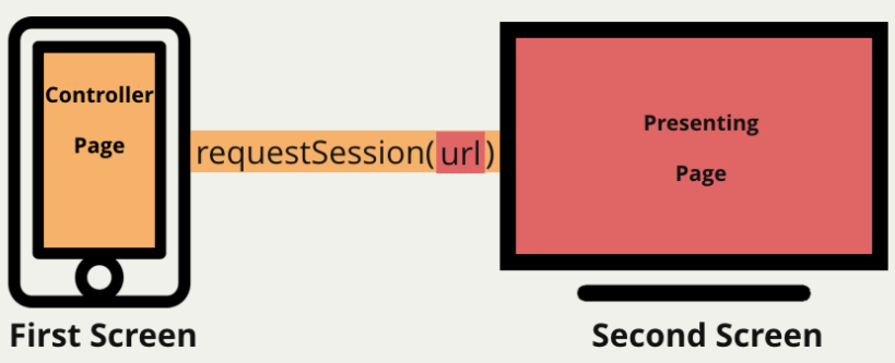

Create native multiscreen apps in minutes.
// Quick Info
// Implementation of the Presentation API as Apache Cordova Plugin
// Based on spec: W3C Presentation API, latest draft version
// Discussed in groups: W3C Second Screen CG, W3C Second Screen WG
// Available in framework: FAMIUM Multiscreen
// FAMIUM is a prototype implementation of upcoming Web and media technologies
For the impatient
Please check out our simple HelloApp to get a first impression on multiscreen app development using this plugin. With the instructions given there the sample app is built in less than a minute!
Introduction
This document describes the Apache Cordova implementation of the Presentation API introduced by the W3C Second Screen Presentation Community Group and which is discussed now within the Second Screen Presentation Working Group. The implementation is an open-sourced part of FAMIUM, an end-to-end prototype implementation for early technology evaluation and interoperability testing introduced by Fraunhofer FOKUS’ Competence Center Future Applications and Media (FAME).
Using this plugin, Presentation API powered apps can be built today, (hopefully not so) long before the Presentation API has landed in our Web browsers.
Notice: Our Implementation supports this version of the Presentation API. Please refer also to the latest work-in-progress version of the API which we are currently working on.
The main purpose of the Presentation API is to enable web pages to access external presentation-type displays and use them for presenting web content. It aims to make secondary displays such as a projector or a connected TV available to the web and takes into account displays that are attached using wired (HDMI, DVI or similar) and wireless technologies (MiraCast, Chromecast, DLNA, AirPlay or similar). At its core, the specification of the Presentation API enables an exchange of messages between a requesting page and a presentation page shown in the secondary display. How those messages are transmitted is left to the UA in order to allow for use of display devices that can be attached in a wide variety of ways. For example, when a display device is attached using HDMI or MiraCast, the UA on the requesting device can render the requested presentation page in that same UA, but instead of displaying in a window on that same device, it can use whatever means the operating system provides for using those external displays. In that case, both the requesting page and the presentation page run on the requesting device and the operating system is used to route the presentation display output to the other display device. The second display device doesn't need to know anything about this spec or that the content involves HTML5. Alternately, some types of external displays may be able to render HTML5 themselves and may have defined their own way to send messages to that content. In that case, the UA on the requesting device would not need to render the presentation page itself. Instead, the UA could act as a proxy translating the request to show a page and the messages into the form understood by the display device.
Since the Presentation API abstracts from all the technologies described above and specifies only the interfaces, there are different ways to implement it depending from the target platform of the controlling device and the presenting display as well as from the technologies and protocols used behind.

This Cordova Presentation API Plugin implementation supports currently the following platforms and technologies, utilizing the single UA approach and streaming the contents of a second WebView to the external display:
- iOS devices connecting via AV cable or AirPlay mirroring, utilizing Multiple Display Programming Guide for iOS
- Android devices connecting via AV cable or MiraCast, utilizing Android Presentation API
Further implementations of the Presentation API (non Cordova) are available at FAMIUM Webscreens.
Plugin API documentation
The full plugin API documentation of the implemented Presentation API is available in the doc folder.
From zero to hero
Step by step guide to develop multiscreen apps using the Cordova Presentation API Plugin
Prerequisites: It is assumed that you have your development system set up. We used
Step 1: Preparing the app project
It starts with the creation of the project folder and obligatory Cordova files.
This is easily with the cordovacommand if you have installed Apache Cordova successfully.
Let's name our first app "MyFirstPresentaionApp" and execute in a shell in $HOME/devel folder:
$ cordova create mypresentation com.example.mypresentation MyFirstPresentaionApp
Creating a new cordova project with name "HelloCordova" and id "MyFirstPresentaionApp" at location "$HOME/devel/mypresentation"
Now we will change into the freshly created project folder and add the platforms we would like to build the app for:
$ cd mypresentation
$ cordova platform add ios
Creating ios project...
$ cordova platform add android
Creating android project...
Creating Cordova project for the Android platform:
Path: platforms/android
Package: com.example.mypresentation
Name: MyFirstPresentaionApp
Android target: android-19
Copying template files...
Project successfully created.
Finally, we add the Cordova Presentation API Plugin by executing:
$ cordova plugin add de.fhg.fokus.famium.presentation
Fetching plugin "de.fhg.fokus.famium.presentation" via plugin registry
npm http GET http://registry.cordova.io/de.fhg.fokus.famium.presentation
npm http 304 http://registry.cordova.io/de.fhg.fokus.famium.presentation
Installing "de.fhg.fokus.famium.presentation" for android
Installing "de.fhg.fokus.famium.presentation" for ios
Alternatively to the last command, you may wish to use the cutting edge version of the plugin or your own version. In this case you can specify the repo url:
$ cordova plugin add https://github.com/fraunhoferfokus/cordova-plugin-presentation.git
Fetching plugin "https://github.com/fraunhoferfokus/cordova-plugin-presentation.git" via git clone
Installing "de.fhg.fokus.famium.presentation" for android
Installing "de.fhg.fokus.famium.presentation" for ios
Now we move on to the interesting part, the app development.
Step 2: Implementing the multiscreen app
This is the most crucial step, since it's about realizing your app idea. At least, you don't have to care about implementing the bits and pieces to connect and handle external displays. The plugin will do the work for you, if only your code implements agains the Presentation API.
So let's implement the following very simple app idea: The controlling page connects to an external screen and provides a button. If the button is clicked then the current date and time will be posted to the presenting page and displayed on the big screen.
For this purpose, we purge the contents of the $HOME/devel/mypresentation/www folder and create two new files:
- index.html that will be our controlling page
- display.html that will be our presenting page
The contents of the index.html could look like:
<!-- index.html -->
<!doctype html>
<html>
<head>
<title>MyFirstPresentaionApp</title>
<script type="text/javascript" src="cordova.js"></script>
</head>
<body>
<button>Send Date and Time to Big Screen</button>
<script type="text/javascript">
var onDeviceReady = function(){
var session,
button = document.querySelector('button');
button.disabled = true;
button.onclick = function(){
if (session && session.state == "connected")
session.postMessage(new Date().toString());
}
navigator.presentation.onavailablechange = function(screenEvent){
if(screenEvent.available){
session = navigator.presentation.requestSession("display.html");
session.onmessage = function(msg){ /*we don't care in this app*/ };
session.onstatechange = function(){
button.disabled = session.state != "connected";
}
}
};
};
document.addEventListener('deviceready', onDeviceReady, false);
</script>
</body>
</html>
The contents of the display.html could look like:
<!-- display.html -->
<!doctype html>
<html>
<head>
<title>MyFirstPresentaionApp | Display</title>
</head>
<body>
<h1>Waiting for a Date and Time update...</h1>
<div></div>
<script type="text/javascript">
var onDeviceReady = function(){
var session,
div = document.querySelector('div');
navigator.presentation.onpresent = function(presentEvent){
session = presentEvent.session;
session.onmessage = function(msg){
div.innerText = msg;
};
session.onstatechange = function(){
div.innerText = session.state;
}
};
};
document.addEventListener('deviceready', onDeviceReady, false);
</script>
</body>
</html>
Pitfall: Do not include the cordova.js into the presenting page, since only the controlling page is a Cordova WebView.
Step 3: Building and running
Having the hard part done, now we finalize the app by building and running it. This is done again very easily using the cordovacommand. To build:
$ cordova build ios
//lot of output (hopefully;) ending with
** BUILD SUCCEEDED **
$ cordova build android
//lot of output (hopefully;) ending with
BUILD SUCCESSFUL
Total time: 20 seconds
Built the following apk(s):
$HOME/devel/mypresentation/platforms/android/ant-build/CordovaApp-debug.apk
To run the app just execute for iOS:
$ cordova run ios
In iOS case the iPhone Simulator will be launched and you can activate the external display by choosing e.g. Hardware -> External Display -> 1024 x 768. Alternatively, you may want to open the Xcode project and tweak your app or deploy it to a real device from there. In this case, you will find the project at $HOME/devel/mypresentation/platforms/ios/MyFirstPresentaionApp.xcodeproj
To run for Android:
$ cordova run android
The run command for Android requires you to have either a (MiraCast capable) Android device attached to your computer and its accessible by adb (use $ adb devices to check) or you have created an emulator ($ android avd) and simulating an external screen using the appropriate setting in the developer settings.
Congratulations, you have managed to build an native app using the Cordova Presentation API Plugin.
Contribution
We are grateful for any valuable contribution, like issue reports, documentation localizations, tests or pull requests.
Moreover, we would love to hear which exciting apps you have created using the Presentation API.
License
Copyright 2014 Fraunhofer FOKUS
Licensed under the Apache License, Version 2.0 (the "License"); you may not use this file except in compliance with the License. You may obtain a copy of the License at
http://www.apache.org/licenses/LICENSE-2.0
Unless required by applicable law or agreed to in writing, software distributed under the License is distributed on an "AS IS" BASIS, WITHOUT WARRANTIES OR CONDITIONS OF ANY KIND, either express or implied. See the License for the specific language governing permissions and limitations under the License.
Contact
Fraunhofer FOKUS - Competence Center FAME // Future Applications and Media